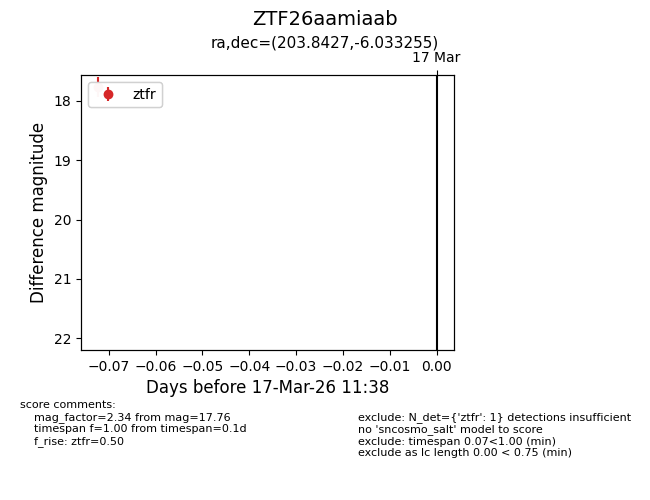
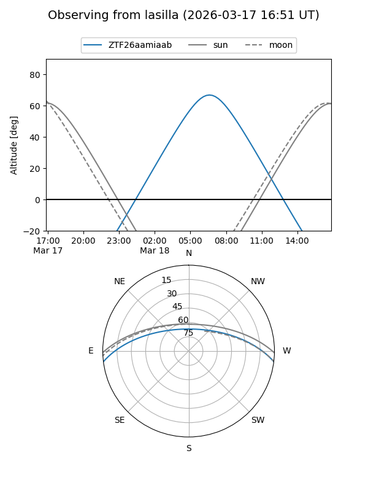
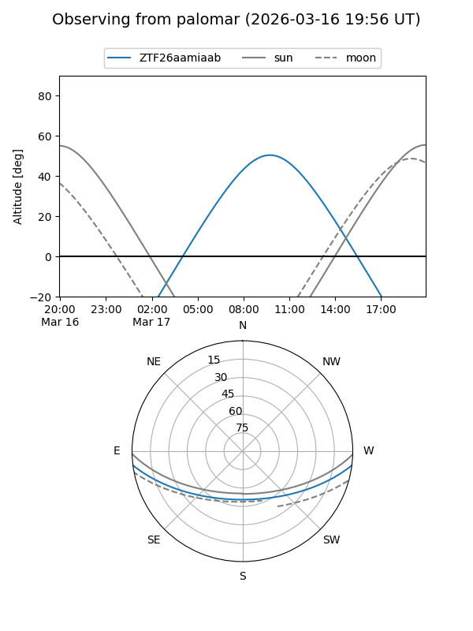

ZTF26aamiaab
Target ZTF26aamiaab at 2026-03-17 11:40
Aliases and brokers:
FINK: link
Lasair: link
ALeRCE: link
alt names
ZTF26aamiaab (ztf,fink_ztf)
Coordinates:
equatorial (ra, dec) = 203.8427,-6.03326
equatorial (HMS+DMS) = 13:35:22.24,-06:01:59.72
galactic (l, b) = (322.3093,+55.17705)
Flags:
Photometry:
last ztfr=17.76
1 ztfr detections
Lightcurve

Visibility


Additional plots